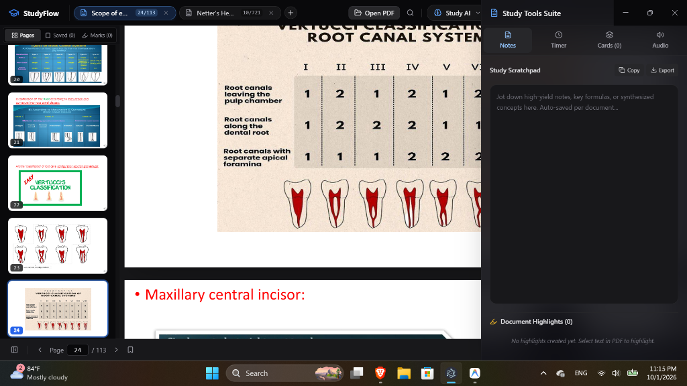

The local-first PDF & PowerPoint workspace engineered for university students. Experience zero-waste focus mode, NotebookLM-grade recall drills, unlimited AI question customization, and 100% offline privacy.

Experience the freedom of selecting exact question counts, slide ranges, formats, and timer pacing before launching StudyFlow.
Ordinary PDF readers waste screen space and leave you passive. StudyFlow converts static materials into active university examination drills.
Eliminates all letterbox borders and wasted dark gaps. Slides dynamically scale to 100% of your screen width and height. Perfect for split-screening with textbooks or presenting on projectors.
Instant real-time persistence. Every highlight, active note, tab switch, and slide coordinate is safely committed. Sudden power loss will never lose your place.
Ultra-fast concurrent multi-stream generation. Synthesizes high-yield MCQs, True/False, clinical case scenarios, and exam traps in 3–5 seconds flat across your lecture slides and PDF textbooks.
Auto-extract key definitions, anatomical formulas, and clinical pearls into interactive flip decks with SM-2 spaced repetition ratings.
Built with modern Windows titlebar overlay. Drag effortlessly from the header, hover over the maximize icon for native Windows Snap Layouts, and enjoy safe exit confirmation prompts.
Click the card below to reveal the answer
Download StudyFlow today for Windows. 100% free, privacy-first, and built for academic champions.